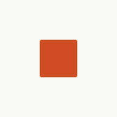

The small-size test
LiveBelow 16px, multi-part mechanics simplify to Breathe. Here, sizes refer to the visible square.
NETWORKBASE / IDENTITY STUDIES
One familiar shape. A signature entrance.
A companion with a
purpose.
Explore every direction. Change the pace.
Find what feels like
NetworkBase.
01 / THE SIGNATURE
The square leads. The name follows.
Right to left, exactly as
imagined.
02 / THE MOTION VOCABULARY
Every concept, ready to compare.
All roads return to one still
square.
Breathe + Shuttle form the proposed everyday vocabulary. Expressive studies deliberately explore beyond the current restrained motion rules.
03 / A FAMILIAR COMPANION
Three directions for the same identity.
A connector, a
companion, a builder.
Working name Node / naming exploration
04 / LIFE INSIDE NETWORKBASE
See the character in the application.
Useful moments. Quiet
working surfaces.
05 / THE WAITING ROOM
Run an operation, interrupt it, or retry.
Activity and outcome
stay connected.
Timings are real in this demo. Waits under 300ms have no loader. Ten seconds means delayed, not failed. No real network requests or changes.
06 / THE DETAILS MATTER
Small sizes, large type, fixed exports.
The identity holds
together.
Below 16px, multi-part mechanics simplify to Breathe. Here, sizes refer to the visible square.
Reserved geometry. No delayed information with reduced motion. The static mark is the fallback if motion cannot run.

Maskable cropCanonical app assets stay Clay / Ink / Paper when the product accent changes.
The square always returns to the same identity. Application navigation stays still.
One meaningful status announcement. Recovery stays visible and keyboard accessible.
Local fonts and assets, native CSS and SVG, and no added runtime dependencies.